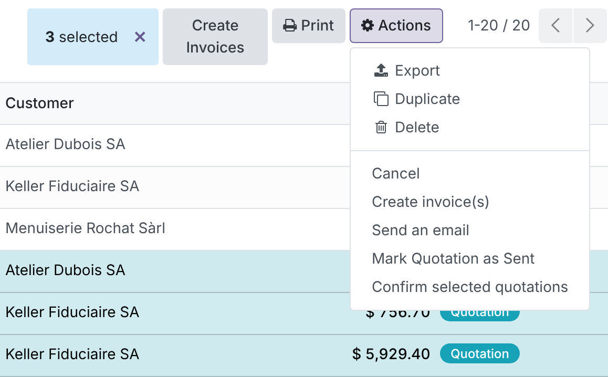
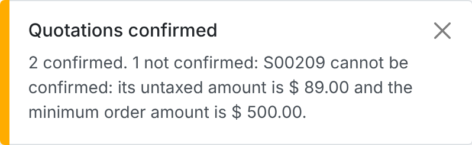

Free module for Odoo 17 · Sales
For sales teams who confirm many quotations one by one.
6 automated tests on Odoo 17 Community · screenshots from the Odoo 18 version · English and French · LGPL-3
By Alexandre Gabriel, independent Odoo developer. Need it adapted to your company? See below.

Three quotations selected, and the new entry at the bottom of the Actions menu. Demo data, shown in the Odoo 18 version.
1. Tick the quotations.
In the quotation list.
2. Choose Actions › Confirm selected quotations.
Each quotation goes through the normal confirmation of Odoo.
3. Read the result.
Odoo tells you how many were confirmed, how many were skipped because they were already confirmed or cancelled, and which were not confirmed, with the reason.

The result of an earlier run on the same demo data: two quotations confirmed, and one refused by another module of this suite, Minimum Order Amount. Demo data, shown in the Odoo 18 version.
Nothing to configure. The action is available to salespeople.
| Tested on | Odoo 17 Community. Developed and tested with 6 automated tests for this module, 171 for the whole suite of 18 modules. |
|---|---|
| Screenshots | Taken in the Odoo 18 version of this module. The screens of the Odoo 17 version were not checked one by one in a browser. |
| Not tested on | Odoo Enterprise. |
| Odoo 18 | An 18.0 version exists on its own branch. |
| Needs | The Odoo app Sales. |
| Languages | English and French. No German translation. |
| Licence | LGPL-3. Free. |
I adapt it to the way you work, or build the small Odoo feature you are missing.
Fixed price announced before I start, paid on delivery.
Describe your need in 2 lines, fixed price within 24 h
Alexandre Gabriel, independent Odoo developer in Lausanne
alexandre@alexandregabriel.ch · alexandregabriel.ch
En français : décrivez votre besoin en deux lignes, je vous réponds avec un prix fixe sous 24 h.